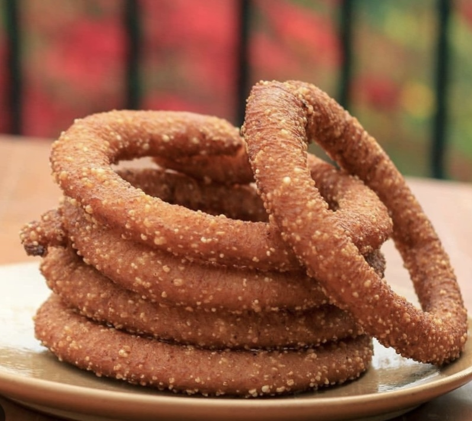

Selroti
Home

Description
Sel roti is a traditional Nepali ring-shaped bread made mainly from rice flour. It is crispy on the outside, soft on the inside, and is especially popular during festivals such as Dashain and Tihar.
The rice flour is mixed with water, sugar, ghee, and sometimes milk or spices to make a smooth batter. The batter is then poured in a ring shape into hot oil and deep-fried until golden and crispy.
Ingredients
- Rice flour
- Sugar
- Ghee
- Water
- Cooking oil
- Prepare the batter: Mix rice flour, sugar, ghee, and water to make a smooth, thick batter.
- Rest the batter: Let the batter rest for a few hours.
- Heat the oil: Heat enough oil in a deep pan for frying.
- Shape and fry: Pour the batter into the hot oil in a circular ring shape and fry until golden brown.
- Serve: Remove the sel roti, drain the excess oil, and serve.